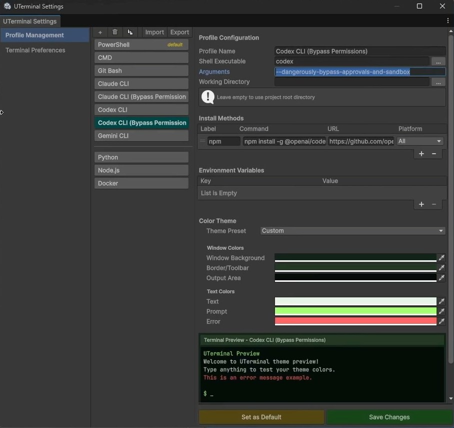

Real PTY terminal
ConPTY on Windows, Unix PTY on macOS and Linux. Shells behave like your OS terminal, not a command input field.
Real terminal for Unity Editor
PowerShell, Bash, vim, Claude CLI, Codex CLI, and MCP-connected workflows running inside a dockable Unity EditorWindow with a real PTY backend.

UTerminal brings a real terminal workflow into Unity. PowerShell, CMD, Bash, Zsh, Git Bash, WSL, and interactive TUI apps run in a dockable EditorWindow without leaving the project. Shell sessions survive Unity domain reloads, editor close, and even editor crashes because they live in a small project-local .NET server.


ConPTY on Windows, Unix PTY on macOS and Linux. Shells behave like your OS terminal, not a command input field.
vim, nano, htop, git commit editors, Claude CLI, Codex CLI, and cursor-based apps work inside Unity.
Domain reloads, editor close, and crashes do not wipe your shells, working directories, or long-running commands.
Claude Code, Codex CLI, Cursor, Windsurf, Cline, and Copilot can participate through an MCP bridge and Unity-aware commands.
| Capability | Command console | UTerminal |
|---|---|---|
| Runs real shells | Usually no | PowerShell, CMD, Bash, Zsh, Git Bash, WSL |
| Interactive TUI apps | Usually no | vim, nano, git editors, Claude CLI, Codex CLI |
| Survives Unity domain reload | UI and state only | Shells, sessions, and tabs survive reloads and editor close |
| ANSI and VT behavior | Limited | VT100/ANSI, alt screen, cursor modes, 256-color, TrueColor |
| AI integration | Not typical | MCP bridge, terminal session control, Unity-aware tools |
Each profile is a complete preset: executable path, arguments, environment variables, working directory, and color theme. Built-in profiles cover common shells; optional AI CLI presets handle Claude, Codex, and Gemini.

Click a clip to jump to that point in the video below.
Initial Asset Store release Multi-tab profiles, PTY backend, ANSI/VT rendering, project-local server, ut CLI, MCP bridge, and 22 color themes.
UTerminal is awaiting Asset Store review. Watch the tutorial or check back when it goes live.